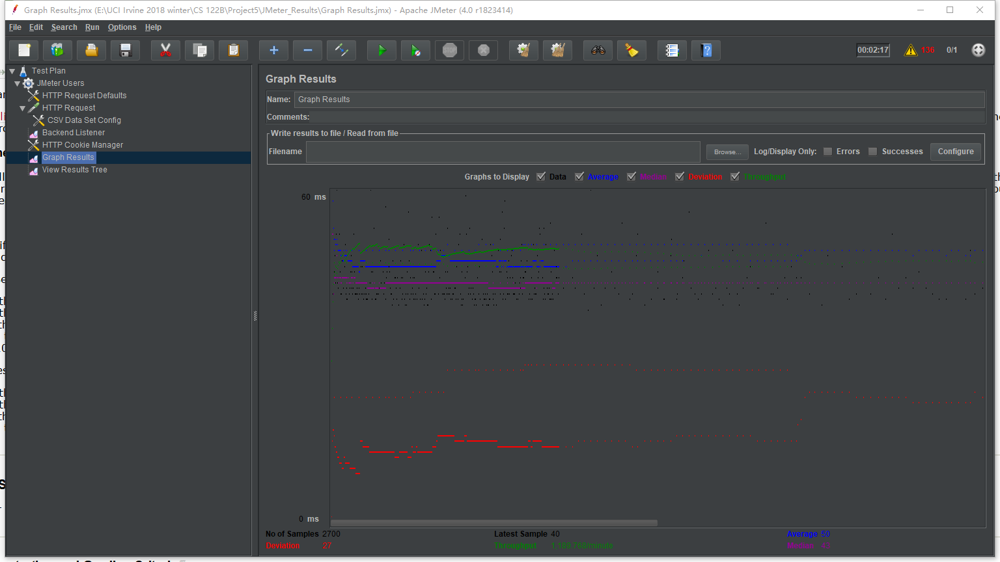
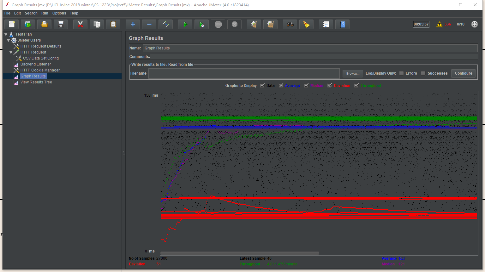
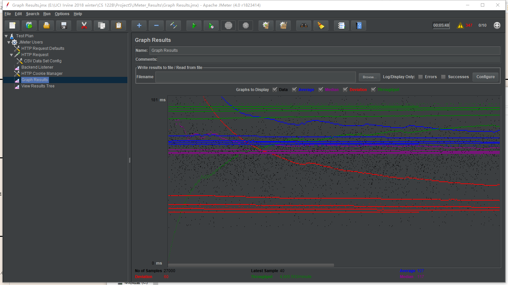
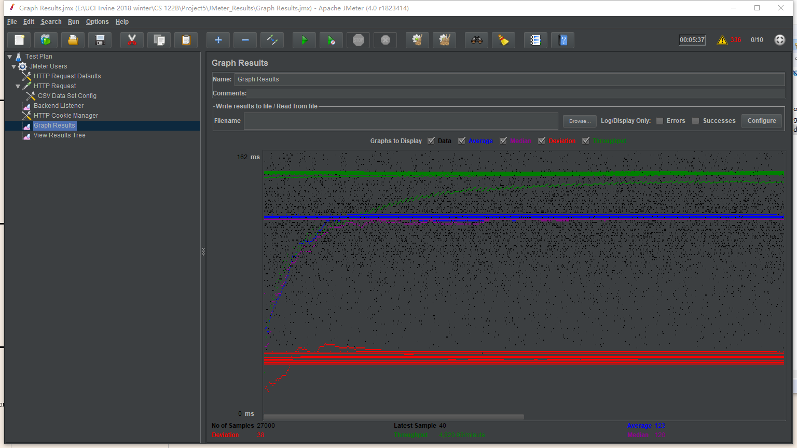
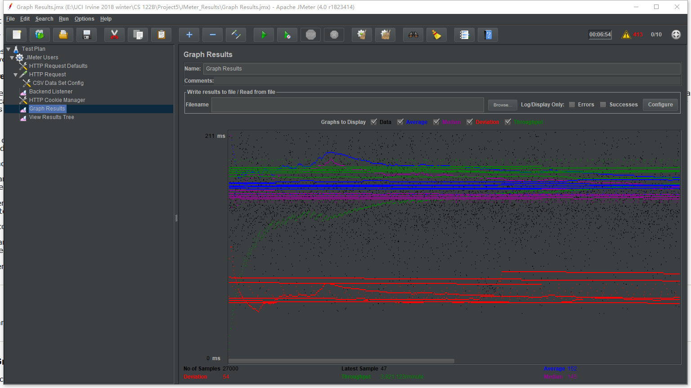

| Single-instance version cases |
Graph Results Screenshot |
Average Query Time(ms) |
Average Search Servlet Time(ms) |
Average JDBC Time(ms) |
Analysis |
| Case 1: HTTP/1 thread |
 |
50 |
11.133087367407408 |
10.958652587777779 |
Time needed for the case HTTP/1 thread is lowest, because it has fewest load of test. |
| Case 2: HTTP/10 threads |
 |
123 |
78.41272254974075 |
78.27515257692593 |
Time needed for the case HTTP/10 threads will be bigger than case1, because it has 10 threads and the load of test becomes bigger. |
| Case 3: HTTPS/10 threads |
 |
127 |
77.38106487766667 |
77.1836286022963 |
Time needed for the case HTTPS/10 threads will be a little bigger than case 2. I think because HTTPS request will need more time to propagate. |
| Case 4: HTTP/10 threads/No prepared statements |
 |
123 |
76.24874539381482 |
76.11376756925926 |
Time needed for the case HTTP/10 threads/No prepared statements will be a little smaller, I think it is because we only send one query each time, so prepared statement does not help on time, ever makes it worse. |
| Case 5: HTTP/10 threads/No connection pooling |
 |
152 |
103.3054734187037 |
103.11078100011112 |
Time needed for the case HTTP/10 threads/No pooling is the biggest one, it proves that connection pooling will save a lot of time. Not using it will make time delay bigger. |
| Scaled version cases |
Graph Results Screenshot |
Average Query Time(ms) |
Average Search Servlet Time(ms) |
Average JDBC Time(ms) |
Analysis |
| Case 1: HTTP/1 thread |
 |
47 |
11.422682347777778 |
11.230464473333333 |
Time needed for the case HTTP/1 thread(scaled version) is close to case 1 without scaled version, because I add sticky session in load balancer. Then for 1 thread, it will always connect one instance. Therefore, scaled version does not help much on time. |
| Case 2: HTTP/10 threads |
 |
100 |
32.045420204886623 |
31.8691715088448 |
Time needed for the case HTTP/10 threads is smaller than case 2 without scaled version, so it proves that scaled version will distribute load of queries and save time. |
| Case 3: HTTP/10 threads/No prepared statements |
 |
126 |
78.20198678088889 |
78.05325502533333 |
Time needed for the case HTTP/10 threads/No prepared statements with scaled version is close to case 4 without scaled version and even bigger. It also shows that because we only send one query each time, so prepared statement does not help on time, ever makes it worse. And scaled version also does not help much. |
| Case 4: HTTP/10 threads/No connection pooling |
 |
170 |
99.29584949244444 |
99.1090249812963 |
Time needed for the case HTTP/10 threads/No pooling is the biggest in all nine cases, it proves that connection pooling and scaled version will save most of time. And not using it will make time delay bigger. |